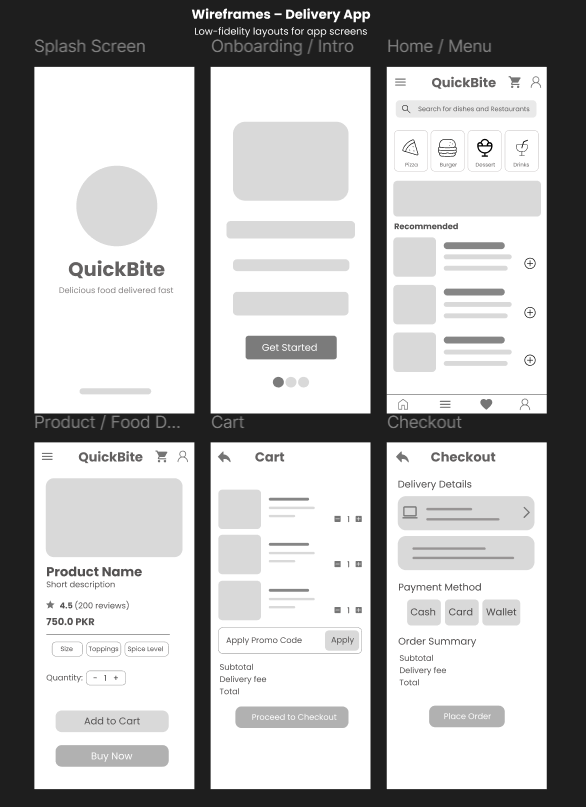
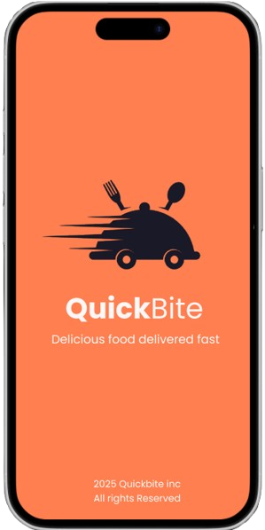
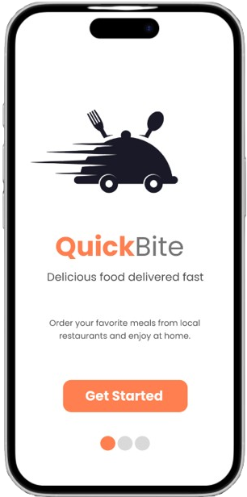
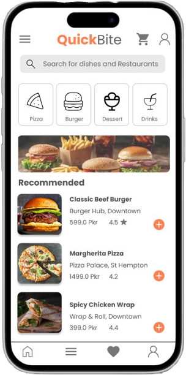
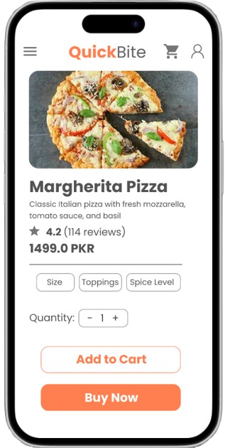
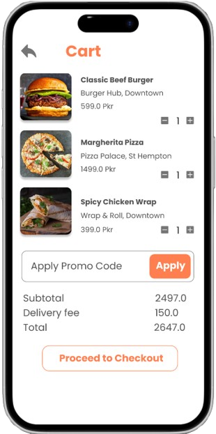
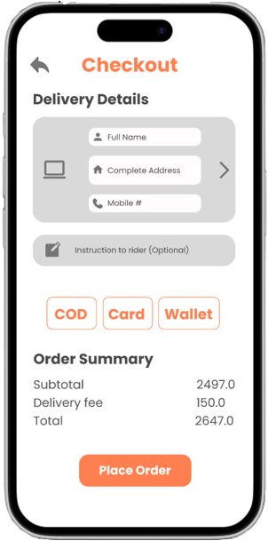

Quickbite – Food Delivery App
UI/UX design of a food delivery app, covering design system, wireframes, final UI, and interactive prototypes in Figma.
Project Description
Quickbite streamlines food discovery and ordering with a clean flow: browse → select → checkout → Pay. This case study highlights my process and decisions from early structure to polished UI.
Design System
Colors, typography, spacing, buttons, inputs, and key components used across the app.

Wireframes
Early low-fidelity structure for core screens to validate flows quickly.

Final UI Screens
High-fidelity designs emphasizing clarity, hierarchy, and effortless navigation.






Interactive Prototype
Explore the core user flow and micro-interactions.
View Prototype
© Hammad Ali